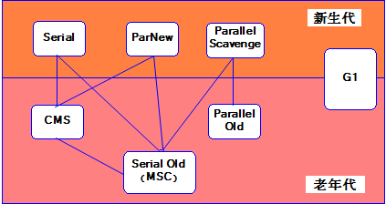
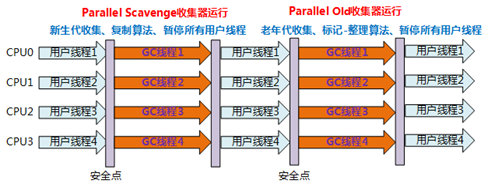

原文连接:https://www.cnblogs.com/jmcui/p/12028626.html
一、概述
1. 哪些内存需要回收
上篇文章 我们介绍了 Java 内存运行时区域的各个部分，其中程序计数器、虚拟机栈、本地方法栈三个区域随线程而生，随线程而灭，在这几个区域内就不需要过多考虑回收的问题，因为方法结束或者线程结束时，内存自然就跟着回收了。
而方法区和 Java 堆是线程共享的，我们只有在程序处于运行期间才能知道会创建哪些对象，这部分内存的分配和回收都是动态的，垃圾收集器所关注的是这部分内存。
2. 回收方法区
方法区的垃圾收集主要回收两部分内容：废弃常量和无用的类。
“废弃常量”指的是当前系统中没有任何一个对象引用指向该常量。
“无用的类”需要同时满足下面三个条件才有可能被虚拟机回收，至于最终是否回收还由虚拟机参数：-Xnoclassgc 控制。
- 该类的所有实例都已被回收，也就是 Java 堆中不存在该类的任何实例。
- 加载该类的 ClassLoader 已经被回收。
- 该类对应的 Class 对象没有被任何地方被引用，无法在任何地方通过反射访问该类的接口。
二、垃圾回收器
首先开始之前先看下 HotSpot 虚拟机所包含的收集器：

图中展示了7种作用于不同分代的收集器，如果两个收集器之间存在连线，则说明它们可以搭配使用。虚拟机所处的区域则表示它是属于新生代还是老年代收集器。
1. Serial 收集器
新生代收集器，复制算法收集，Serial 收集器是最基本、发展历史最悠久的收集器。它是一个单线程的收集器，只会使用一个 CPU 或一条收集线程去完成垃圾收集工作，它在垃圾收集时，必须暂停其他所有的工作线程，直到它收集结束。

优点：简单高效；虚拟机 Client 模式下表现优异（Client 模式下内存较小、CPU较少，能减少许多线程交互的开销）。
缺点：回收工作需要 Stop The World ；单线程；不适用虚拟机 Server 模式（Server 模式下内存较大、CPU较多，导致回收工作停顿时间过长）。
2. ParNew 收集器
新生代收集器，复制算法收集，ParNew 收集器其实就是 Serial 收集器的多线程版本，除了使用多线程进行回收外，其余行为包括控制参数、收集算法、Stop The World、对象分配规则、回收策略等都与 Serial 收集器完全一样。

优点：多线程工作；可以与 CMS 收集器搭配工作；虚拟机 Server 模式下表现优异。
缺点：回收工作需要 Stop The World 。
3. Parallel Scavenge 收集器
新生代收集器，复制算法收集，多线程工作，Parallel Scavenge 收集器的关注点在于达到一个可控制的吞吐量（其他收集器的关注点是缩短垃圾收集时用户线程的停顿时间），停顿时间越短越适合需要与用户交互的程序；而高吞吐量则可以高效率的利用 CPU 时间，尽快完成程序的运行任务。
GC 自适应调节策略是 Parallel Scavenge 收集器和 ParNew 收集器的一个重要区别。它变现为：只需要把基本的内存数据设置好（如 -Xmx 设置最大堆），然后使用 MaxGCPauseMillis 参数（更关注最大停顿时间）或 GCRatio（更关注吞吐量）给虚拟机设立一个优化目标，那具体细节参数的调节工作就由虚拟机来完成了。
优点：多线程工作；注重系统吞吐量和CPU资源；自适应调节策略。
缺点：回收工作需要 Stop The World ；可选的老年代收集器过少，无法与 CMS 收集器配合工作，在 JDK1.5 之前只能和 Serial Old 收集器配合工作。
tips：
- 吞吐量 = 运行用户代码时间 / （运行用户代码时间 + 垃圾收集时间）
- 自适应调节策略使用 -XX:+UseAdptiveSizePolicy 参数打开。
- 与吞吐量关系密切，故也称为“吞吐量优先”收集器。
4. Serial Old 收集器
老年代收集器，标记-整理算法，单线程，Serial Old 收集器是 Serial 收集器的老年代版本。
优点：虚拟机 Client 模式下表现尚可（Client 模式下内存较小、CPU较少，能减少许多线程交互的开销）；CMS 收集器的后备预案（在并发收集Concurent Mode Failure时使用）。
缺点：回收工作需要 Stop The World ；单线程。
5. Parallel Old 收集器
老年代收集器，标记-整理算法，多线程，Parallel Old 收集器是 Parallel Scavenge 收集器的老年代版本，在 JDK1.6 后开始提供。

优点：搭配 Parallel Scavenge 收集器使用，关注系统吞吐量以及CPU资源。
缺点：回收工作需要 Stop The World ；可搭配的新生代收集器仅有 Parallel Scavenge 收集器而已。
6. CMS 收集器
老年代收集器，标记-清除算法，多线程，CMS（Concurrent Mark Sweep）收集器是一种以获得最短回收停顿时间为目标的收集器，是真正意义上与用户线程并发运行的收集器，因此，使用 CMS 收集器能给用户带来良好的体验。

优点：并发收集；低停顿。
缺点：
- CMS 收集器对 CPU 资源敏感，在并发标记/清理 的时候，虽然不会导致用户线程停顿，但标记/清理工作是要占用一部分 CPU 资源的，这无疑会降低吞吐量。（CMS 默认启动的回收线程数是 （CPU 数量 + 3）/ 4）
- CMS 收集器无法处理浮动垃圾（Floating Garbage），可能出现 “Concurent Mode Failure” 失败而导致另一次 Full GC 的产生（使用 Serial Old 收集器）。浮动垃圾指的是并发清理阶段，用户线程并发运行产生的垃圾，当这些浮动垃圾的内存超过了CMS 运行期间预留的内存，就会导致 “Concurent Mode Failure” 失败。
- CMS 收集器使用的标记-清除算法会有大量的内存碎片出现，将会给大对象分配带来很多麻烦。
7. G1 收集器
分区（Region）收集器，标记-整理算法和复制算法，多线程，G1（Garbage-First）收集器在 JDK 7u4 版本发布，在 JDK9 中成为默认垃圾收集器，是一款面向服务端应用的垃圾收集器，它的目标也是获得最短停顿时间。

优点：
- 并行和并发，缩短 Stop The World 停顿的时间。
- 标记-整理算法、复制算法不会出现类似 CMS 的内存碎片问题。
- 可预测的停顿时间模型，能让使用者明确指定在一个长度为 M 毫秒的时间片段内，消耗在垃圾收集上的时间不超过 N 毫秒。
推荐场景：
G1的首要目的是为那些需要大容量内存和较小 GC 延迟的应用程序提供解决方案。这通常是指那些堆大小设置在 6GB 以上，确定的、可以预测的暂停时间在 0.5 秒以内的应用程序。
如果应用程序符合以下一项或者多项特征，那么从 CMS 或者 ParallelOld 收集器切换到 G1 可能更合适。
- 活动对象占据了超过 50% 的 Java 堆空间。
- 对象分配率或者提升率波动明显。
- 不希望有长时间的垃圾收集暂停时间（超过0.5秒或1秒）。
参考链接：
- 《深入理解 JVM 虚拟机》
- G1垃圾收集器介绍
- jvm垃圾收集器（终结篇）